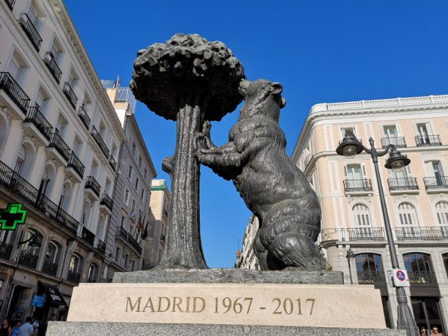
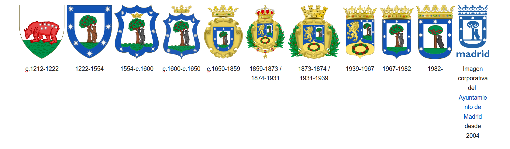

Estatua del oso y el madroñoUna estatua de piedra y bronce de un oso rampante apoyando sus patas delanteras sobre un madroño e intentando comer sus frutos. Fue erigida en el año 1967 y representa el escudo de la ciudad de Madrid.
 La estatua. En 2017 cumplió su 50º aniversario
El oso forma parte del escudo madrileño desde su creación en el año 1211, ya que en la Edad Media era común que los escudos de ciudades tuviesen un animal, aunque entonces era un oso rojo con las 7 estrellas de la Osa Mayor en su pelaje. En 1222 el oso pasó a ser un oso normal, aunque el color rojo y las 7 estrellas se utilizaron para hacer la bandera de la Comunidad de Madrid.
En ese mismo año, también se le añadió el madroño. Se piensa que este árbol fue escogido por sus propiedades curativas contra la peste, así como por la similitud entre las palabras "madroño" y "Madrid".
 La evolución del escudo de Madrid desde la Edad Media hasta la actualidad
A modo de curiosidad, el modelo usado por el escultor (Antonio Navarro Santafé) fue un oso que él mismo cazó en Asturias y al que bautizó como "Felipe". Sin embargo, se cree que el oso del escudo (y de la estatua) es una osa, por su asociación con la Osa Mayor.